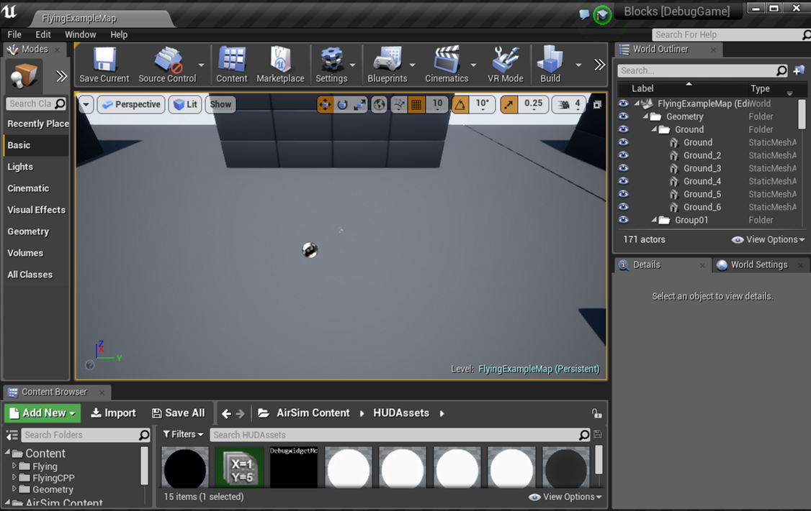

Image APIs#
Please read general API doc first if you are not familiar with AirSim APIs.
Getting a Single Image#
Here's a sample code to get a single image from camera named "0". The returned value is bytes of png format image. To get uncompressed and other format as well as available cameras please see next sections.
Python#
import airsim #pip install airsim
# for car use CarClient()
client = airsim.MultirotorClient()
png_image = client.simGetImage("0", airsim.ImageType.Scene)
# do something with image
C++#
#include "vehicles/multirotor/api/MultirotorRpcLibClient.hpp"
int getOneImage()
{
using namespace msr::airlib;
// for car use CarRpcLibClient
MultirotorRpcLibClient client;
std::vector<uint8_t> png_image = client.simGetImage("0", VehicleCameraBase::ImageType::Scene);
// do something with images
}
Getting Images with More Flexibility#
The simGetImages API which is slightly more complex to use than simGetImage API, for example, you can get left camera view, right camera view and depth image from left camera in a single API call. The simGetImages API also allows you to get uncompressed images as well as floating point single channel images (instead of 3 channel (RGB), each 8 bit).
Python#
import airsim #pip install airsim
# for car use CarClient()
client = airsim.MultirotorClient()
responses = client.simGetImages([
# png format
airsim.ImageRequest(0, airsim.ImageType.Scene),
# uncompressed RGB array bytes
airsim.ImageRequest(1, airsim.ImageType.Scene, False, False),
# floating point uncompressed image
airsim.ImageRequest(1, airsim.ImageType.DepthPlanar, True)])
# do something with response which contains image data, pose, timestamp etc
Using AirSim Images with NumPy#
If you plan to use numpy for image manipulation, you should get uncompressed RGB image and then convert to numpy like this:
responses = client.simGetImages([airsim.ImageRequest("0", airsim.ImageType.Scene, False, False)])
response = responses[0]
# get numpy array
img1d = np.fromstring(response.image_data_uint8, dtype=np.uint8)
# reshape array to 4 channel image array H X W X 4
img_rgb = img1d.reshape(response.height, response.width, 3)
# original image is fliped vertically
img_rgb = np.flipud(img_rgb)
# write to png
airsim.write_png(os.path.normpath(filename + '.png'), img_rgb)
Quick Tips#
-
The API
simGetImagereturnsbinary string literalwhich means you can simply dump it in binary file to create a .png file. However if you want to process it in any other way than you can handy functionairsim.string_to_uint8_array. This converts binary string literal to NumPy uint8 array. -
The API
simGetImagescan accept request for multiple image types from any cameras in single call. You can specify if image is png compressed, RGB uncompressed or float array. For png compressed images, you getbinary string literal. For float array you get Python list of float64. You can convert this float array to NumPy 2D array usingYou can also save float array to .pfm file (Portable Float Map format) usingairsim.list_to_2d_float_array(response.image_data_float, response.width, response.height)airsim.write_pfm()function. -
If you are looking to query position and orientation information in sync with a call to one of the image APIs, you can use
client.simPause(True)andclient.simPause(False)to pause the simulation while calling the image API and querying the desired physics state, ensuring that the physics state remains the same immediately after the image API call.
C++#
int getStereoAndDepthImages()
{
using namespace msr::airlib;
typedef VehicleCameraBase::ImageRequest ImageRequest;
typedef VehicleCameraBase::ImageResponse ImageResponse;
typedef VehicleCameraBase::ImageType ImageType;
// for car use
// CarRpcLibClient client;
MultirotorRpcLibClient client;
// get right, left and depth images. First two as png, second as float16.
std::vector<ImageRequest> request = {
//png format
ImageRequest("0", ImageType::Scene),
//uncompressed RGB array bytes
ImageRequest("1", ImageType::Scene, false, false),
//floating point uncompressed image
ImageRequest("1", ImageType::DepthPlanar, true)
};
const std::vector<ImageResponse>& response = client.simGetImages(request);
// do something with response which contains image data, pose, timestamp etc
}
Ready to Run Complete Examples#
Python#
For a more complete ready to run sample code please see sample code in AirSimClient project for multirotors or HelloCar sample. This code also demonstrates simple activities such as saving images in files or using numpy to manipulate images.
C++#
For a more complete ready to run sample code please see sample code in HelloDrone project for multirotors or HelloCar project.
See also other example code that generates specified number of stereo images along with ground truth depth and disparity and saving it to pfm format.
Available Cameras#
These are the default cameras already available in each vehicle. Apart from these, you can add more cameras to the vehicles and external cameras which are not attached to any vehicle through the settings.
Car#
The cameras on car can be accessed by following names in API calls: front_center, front_right, front_left, fpv and back_center. Here FPV camera is driver's head position in the car.
Multirotor#
The cameras on the drone can be accessed by following names in API calls: front_center, front_right, front_left, bottom_center and back_center.
Computer Vision Mode#
Camera names are same as in multirotor.
Backward compatibility for camera names#
Before AirSim v1.2, cameras were accessed using ID numbers instead of names. For backward compatibility you can still use following ID numbers for above camera names in same order as above: "0", "1", "2", "3", "4". In addition, camera name "" is also available to access the default camera which is generally the camera "0".
"计算机视觉" 模式#
您可以在所谓的“计算机视觉”模式下使用 AirSim。在此模式下，物理引擎将被禁用，并且没有飞行器，只有摄像头（如果您想要飞行器但不包含其运动学特性，可以使用多旋翼模式和物理引擎 ExternalPhysicsEngine ）。您可以使用键盘移动（使用 F1 查看按键帮助）。您可以按下录制按钮来连续生成图像。或者，您可以调用 API 来移动摄像头并拍摄图像。
要激活此模式，请编辑您可以在 Documents\AirSim 文件夹（或 Linux 上的 ~/Documents/AirSim）中找到的 settings.json，并确保根级别存在以下值：
{
"SettingsVersion": 1.2,
"SimMode": "ComputerVision"
}
以下是移动摄像头并拍摄图像的 Python 代码示例 。
此模式受到 UnrealCV 项目 的启发。
Setting Pose in Computer Vision Mode#
To move around the environment using APIs you can use simSetVehiclePose API. This API takes position and orientation and sets that on the invisible vehicle where the front-center camera is located. All rest of the cameras move along keeping the relative position. If you don't want to change position (or orientation) then just set components of position (or orientation) to floating point nan values. The simGetVehiclePose allows to retrieve the current pose. You can also use simGetGroundTruthKinematics to get the quantities kinematics quantities for the movement. Many other non-vehicle specific APIs are also available such as segmentation APIs, collision APIs and camera APIs.
Camera APIs#
The simGetCameraInfo returns the pose (in world frame, NED coordinates, SI units) and FOV (in degrees) for the specified camera. Please see example usage.
The simSetCameraPose sets the pose for the specified camera while taking an input pose as a combination of relative position and a quaternion in NED frame. The handy airsim.to_quaternion() function allows to convert pitch, roll, yaw to quaternion. For example, to set camera-0 to 15-degree pitch while maintaining the same position, you can use:
camera_pose = airsim.Pose(airsim.Vector3r(0, 0, 0), airsim.to_quaternion(0.261799, 0, 0)) #PRY in radians
client.simSetCameraPose(0, camera_pose);
simSetCameraFovallows changing the Field-of-View of the camera at runtime.simSetDistortionParams,simGetDistortionParamsallow setting and fetching the distortion parameters K1, K2, K3, P1, P2
All Camera APIs take in 3 common parameters apart from the API-specific ones, camera_name(str), vehicle_name(str) and external(bool, to indicate External Camera). Camera and vehicle name is used to get the specific camera, if external is set to true, then the vehicle name is ignored. Also see external_camera.py for example usage of these APIs.
Gimbal#
You can set stabilization for pitch, roll or yaw for any camera using settings.
Please see example usage.
Changing Resolution and Camera Parameters#
To change resolution, FOV etc, you can use settings.json. For example, below addition in settings.json sets parameters for scene capture and uses "Computer Vision" mode described above. If you omit any setting then below default values will be used. For more information see settings doc. If you are using stereo camera, currently the distance between left and right is fixed at 25 cm.
{
"SettingsVersion": 1.2,
"CameraDefaults": {
"CaptureSettings": [
{
"ImageType": 0,
"Width": 256,
"Height": 144,
"FOV_Degrees": 90,
"AutoExposureSpeed": 100,
"MotionBlurAmount": 0
}
]
},
"SimMode": "ComputerVision"
}
What Does Pixel Values Mean in Different Image Types?#
Available ImageType Values#
Scene = 0,
DepthPlanar = 1,
DepthPerspective = 2,
DepthVis = 3,
DisparityNormalized = 4,
Segmentation = 5,
SurfaceNormals = 6,
Infrared = 7,
OpticalFlow = 8,
OpticalFlowVis = 9
DepthPlanar and DepthPerspective#
You normally want to retrieve the depth image as float (i.e. set pixels_as_float = true) and specify ImageType = DepthPlanar or ImageType = DepthPerspective in ImageRequest. For ImageType = DepthPlanar, you get depth in camera plane, i.e., all points that are plane-parallel to the camera have same depth. For ImageType = DepthPerspective, you get depth from camera using a projection ray that hits that pixel. Depending on your use case, planner depth or perspective depth may be the ground truth image that you want. For example, you may be able to feed perspective depth to ROS package such as depth_image_proc to generate a point cloud. Or planner depth may be more compatible with estimated depth image generated by stereo algorithms such as SGM.
DepthVis#
When you specify ImageType = DepthVis in ImageRequest, you get an image that helps depth visualization. In this case, each pixel value is interpolated from black to white depending on depth in camera plane in meters. The pixels with pure white means depth of 100m or more while pure black means depth of 0 meters.
DisparityNormalized#
You normally want to retrieve disparity image as float (i.e. set pixels_as_float = true and specify ImageType = DisparityNormalized in ImageRequest) in which case each pixel is (Xl - Xr)/Xmax, which is thereby normalized to values between 0 to 1.
Segmentation#
When you specify ImageType = Segmentation in ImageRequest, you get an image that gives you ground truth segmentation of the scene. At the startup, AirSim assigns value 0 to 255 to each mesh available in environment. This value is then mapped to a specific color in the pallet. The RGB values for each object ID can be found in this file.
{kind=link}
You can assign a specific value (limited to the range 0-255) to a specific mesh using APIs. For example, below Python code sets the object ID for the mesh called "Ground" to 20 in Blocks environment and hence changes its color in Segmentation view:
success = client.simSetSegmentationObjectID("Ground", 20);
The return value is a boolean type that lets you know if the mesh was found.
Notice that typical Unreal environments, like Blocks, usually have many other meshes that comprises of same object, for example, "Ground_2", "Ground_3" and so on. As it is tedious to set object ID for all of these meshes, AirSim also supports regular expressions. For example, the code below sets all meshes which have names starting with "ground" (ignoring case) to 21 with just one line:
success = client.simSetSegmentationObjectID("ground[\w]*", 21, True);
The return value is true if at least one mesh was found using regular expression matching.
It is recommended that you request uncompressed image using this API to ensure you get precise RGB values for segmentation image:
responses = client.simGetImages([ImageRequest(0, AirSimImageType.Segmentation, False, False)])
img1d = np.fromstring(response.image_data_uint8, dtype=np.uint8) #get numpy array
img_rgb = img1d.reshape(response.height, response.width, 3) #reshape array to 3 channel image array H X W X 3
img_rgb = np.flipud(img_rgb) #original image is fliped vertically
#find unique colors
print(np.unique(img_rgb[:,:,0], return_counts=True)) #red
print(np.unique(img_rgb[:,:,1], return_counts=True)) #green
print(np.unique(img_rgb[:,:,2], return_counts=True)) #blue
A complete ready-to-run example can be found in segmentation.py.
Unsetting object ID#
An object's ID can be set to -1 to make it not show up on the segmentation image.
How to Find Mesh Names?#
To get desired ground truth segmentation you will need to know the names of the meshes in your Unreal environment. To do this, you will need to open up Unreal Environment in Unreal Editor and then inspect the names of the meshes you are interested in using the World Outliner. For example, below we see the mesh names for the ground in Blocks environment in right panel in the editor:

If you don't know how to open Unreal Environment in Unreal Editor then try following the guide for building from source.
Once you decide on the meshes you are interested, note down their names and use above API to set their object IDs. There are few settings available to change object ID generation behavior.
Changing Colors for Object IDs#
At present the color for each object ID is fixed as in this pallet. We will be adding ability to change colors for object IDs to desired values shortly. In the meantime you can open the segmentation image in your favorite image editor and get the RGB values you are interested in.
Startup Object IDs#
At the start, AirSim assigns object ID to each object found in environment of type UStaticMeshComponent or ALandscapeProxy. It then either uses mesh name or owner name (depending on settings), lower cases it, removes any chars below ASCII 97 to remove numbers and some punctuations, sums int value of all chars and modulo 255 to generate the object ID. In other words, all object with same alphabet chars would get same object ID. This heuristic is simple and effective for many Unreal environments but may not be what you want. In that case, please use above APIs to change object IDs to your desired values. There are few settings available to change this behavior.
Getting Object ID for Mesh#
The simGetSegmentationObjectID API allows you get object ID for given mesh name.
Infrared#
Currently this is just a map from object ID to grey scale 0-255. So any mesh with object ID 42 shows up with color (42, 42, 42). Please see segmentation section for more details on how to set object IDs. Typically noise setting can be applied for this image type to get slightly more realistic effect. We are still working on adding other infrared artifacts and any contributions are welcome.
OpticalFlow and OpticalFlowVis#
These image types return information about motion perceived by the point of view of the camera. OpticalFlow returns a 2-channel image where the channels correspond to vx and vy respectively. OpticalFlowVis is similar to OpticalFlow but converts flow data to RGB for a more 'visual' output.
Example Code#
A complete example of setting vehicle positions at random locations and orientations and then taking images can be found in GenerateImageGenerator.hpp. This example generates specified number of stereo images and ground truth disparity image and saving it to pfm format.